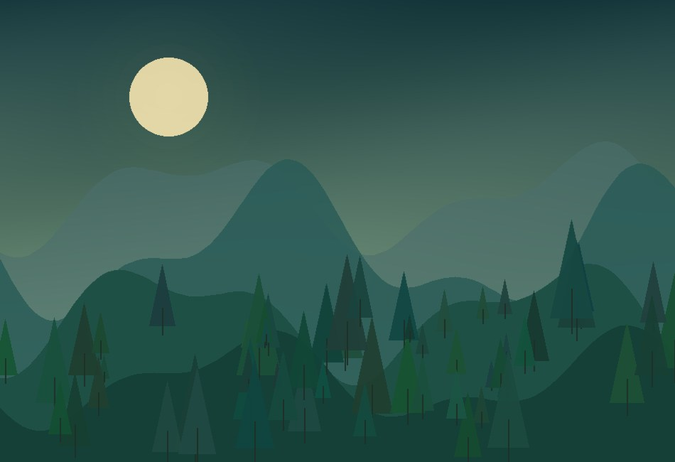
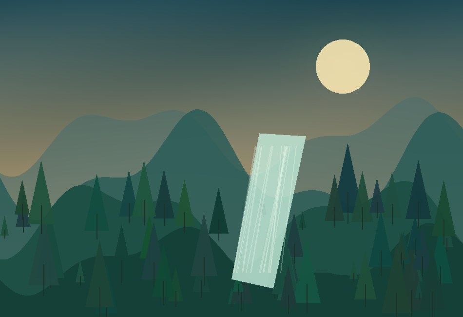

Semenyih, SelangorEasy*
Broga Hill
Open hill views and sunrise scenery. Check local access and current trail rules.
↗ Distance: verify◷ Time: verify
View route details →Explore hiking route ideas and read useful notes before heading outdoors.
Choose a difficulty category to browse the route cards. Route details are examples and should be verified locally.
Open hill views and sunrise scenery. Check local access and current trail rules.

Green forest trails close to the city. Several routes have different lengths.

Forest climbing and a distinctive rocky summit. Prepare for steep sections.

Example route card for layout demonstration. Not a verified real hiking route.

Example of a demanding ridge route. Not a verified real hiking route.

Example forest and waterfall route. Not a verified real hiking route.
* Difficulty categories are illustrative. Last three cards are fictional layout examples. All landscape images are original digital illustrations.
Learn about each routeLocation: Semenyih, Selangor
Open hill views and sunrise scenery. Check local access and current trail rules.
Trail distance, duration, local access rules and difficulty should be checked before travel. This is a student demonstration, not a live route guide.
↑ Back to routesLocation: Petaling Jaya, Selangor
Green forest trails close to the city. Several routes have different lengths.
Trail distance, duration, local access rules and difficulty should be checked before travel. This is a student demonstration, not a live route guide.
↑ Back to routesLocation: Rembau, Negeri Sembilan
Forest climbing and a distinctive rocky summit. Prepare for steep sections.
Trail distance, duration, local access rules and difficulty should be checked before travel. This is a student demonstration, not a live route guide.
↑ Back to routesLocation: Sample route concept
Example route card for layout demonstration. Not a verified real hiking route.
Trail distance, duration, local access rules and difficulty should be checked before travel. This is a student demonstration, not a live route guide.
↑ Back to routesLocation: Sample route concept
Example of a demanding ridge route. Not a verified real hiking route.
Trail distance, duration, local access rules and difficulty should be checked before travel. This is a student demonstration, not a live route guide.
↑ Back to routesLocation: Sample route concept
Example forest and waterfall route. Not a verified real hiking route.
Trail distance, duration, local access rules and difficulty should be checked before travel. This is a student demonstration, not a live route guide.
↑ Back to routesShare your experience to help other outdoor enthusiasts.